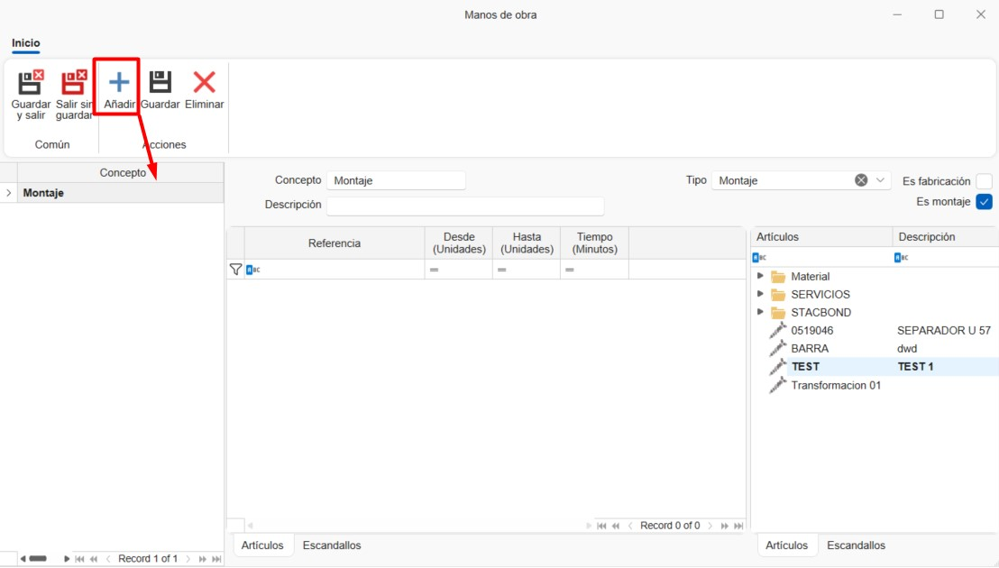
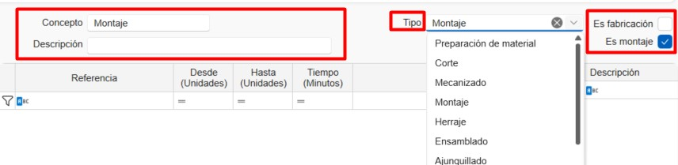
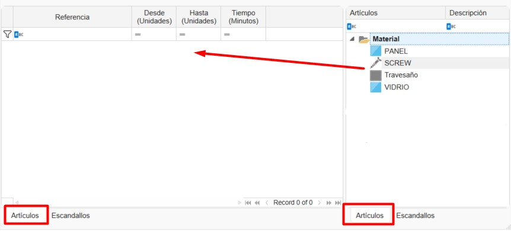

Tarifas e Mão de Obra de Materiais no ENBLAU
1. Introdução
Este manual descreve, passo a passo, a utilização das Tarifas e da Mão de obra para a definição de preços de custo e de venda dos materiais no ENBLAU.
2. Criar Tarifas
- A partir de Armazéns → Tarifas, acede-se à lista de tarifas existentes.

- Selecionar o botão Nova para criar uma nova tarifa e indicar o respetivo nome.

2.1. Geral
-
No separador Geral, podem ser preenchidos os seguintes campos:
Descrição: Permite adicionar uma descrição à tarifa.
Margem: Define a margem aplicada à tarifa.
Tarifa ascendente: Indica se a tarifa se baseia noutra tarifa existente.
Observações: Campo para notas adicionais.

2.2. Margem e valor por artigos
- No separador Margem e valor por artigos, é possível definir margens e valores arrastando a referência final do material a partir do separador Artigos, localizado no lado direito da janela.
O valor será calculado automaticamente de acordo com o tipo de cálculo do artigo: por unidade, metro linear ou metro quadrado (m²).

2.3. Valor de mão de obra (Minuto)
- No separador Valor de mão de obra (Minuto), é possível definir o custo por minuto arrastando o conceito de mão de obra a partir do separador Mão de obra.

ℹ️ Nota: A mão de obra deve ser criada previamente na secção 3. Criar Mão de Obra.
2.4. Valor de mão de obra (m²)
- No separador Valor de mão de obra (m²), é possível definir o valor por metro quadrado arrastando o conceito de mão de obra a partir do separador Mão de obra.

ℹ️ Nota: A mão de obra deve ser criada previamente na secção Mão de obra.
2.5. Valor de fichas técnicas
- No separador Valor de fichas técnicas, é possível atribuir um valor fixo a uma ficha técnica (grupo de materiais).

ℹ️ Nota: O detalhe dos materiais continuará a ser calculado de forma independente. O valor da ficha técnica não tem necessariamente de coincidir com o total estimado dos materiais para venda.
2.6. Lista de Tarifas
- Ao criar uma tarifa, o sistema gera automaticamente outra tarifa com o mesmo nome seguido de + SUE, destinada a materiais avulsos.

- A tarifa de Custo é gerada automaticamente e é definida como tarifa base de custo para os materiais do ENBLAU.
Esta tarifa não pode ser eliminada.
3. Criar Mão de Obra
- A partir de Armazéns → Tarifas → Mão de obra, acede-se à lista de mãos de obra.

- Será aberta uma janela que permite criar e gerir diferentes conceitos de mão de obra, preenchendo os seguintes campos:

1. Conceito: Nome da mão de obra.
2. Descrição: Descrição opcional do conceito.
3. Tipo: Tipo de mão de obra, selecionável a partir da lista de postos disponíveis no enCONTROL.
4. É fabrico: Indica se a mão de obra corresponde a fabrico.
5. É montagem: Indica se a mão de obra corresponde a montagem.

6. Artigos: Permite definir o tempo de mão de obra (em minutos) para cada artigo, arrastando-o a partir da árvore Artigos à direita.
Pode ser definido um intervalo de unidades (De / Até) para o material.

7. Fichas técnicas: Permite definir o tempo de mão de obra (em minutos) para cada ficha técnica, arrastando-a a partir da árvore Fichas técnicas à direita.

 Español
Español
 English
English
 Italiano
Italiano
 Português
Português